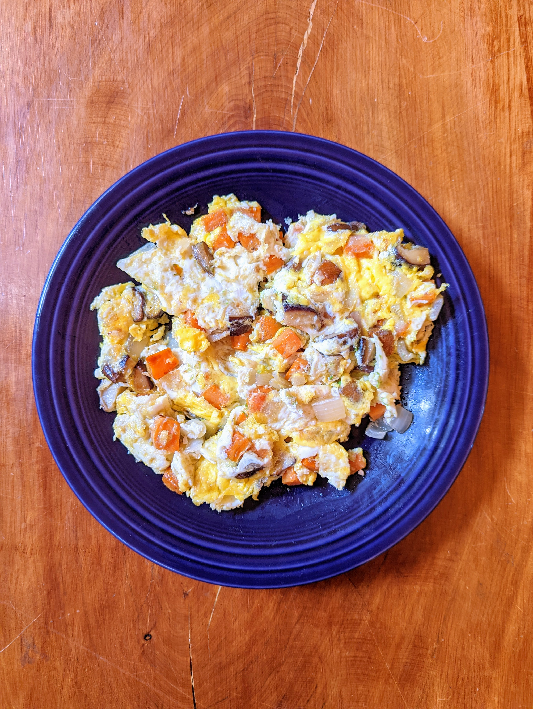

sweet potato scramble

eggs and stuff in a pan. boom.
ingredients
- eggs
- sweet potato
- coconut oil
- salt
- probably butter too
- literally any other vegetable
steps
- heat pan to medium-ish temp with coconut oil
- chop up sweet potato into smallish chunks and add to pan
- salt dat shiz a little more than you think you should
- reduce heat to medium-low-ish temp
- add literally any other vege (onion and shiitakes strongly recommended)
- maybe a little more salt?
- probably add butter
- other spices if you want
- once sweet potato is soft, drop 2 to 6 eggs (go big plz)
- scramble (see below for pro egg technique)
- plate dat shiz and add sauce of choice (mayo is lit)
egg technique
- allow whites to cook for about 30 to 45 seconds before popping yolks
- pop dem yolks and fold into ingredients until it all swirly but don't over-stir plz
- allow bottom to cook a bit
- slice into quarters with spatula and flip each chunk only once
- el fin
additional advice
- do not photograph food
- no one cares what you're eating
- delete your social media except twitter for checking crypto stuff